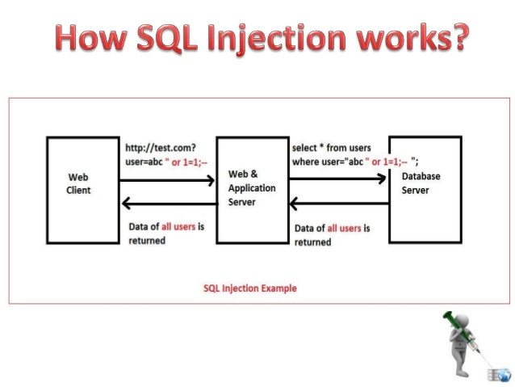

Security
Introduction
Computer security, or more formally known as IT security, is defined as 'the protection of computer systems from the theft and damage to their hardware, software or information, as well as from disruption or misdirection of the services they provide'.[1] Thus, protection includes the physical and software side. Security is a growing field of interest and importance because we are relying more and more on these devices. These devices are connected to the Internet, and that brings a lot of trouble with it. In the next section we will discuss some common modern attacks.
Common attacks
There are several kinds of security attacks, examples that we will discuss briefly:
For a more thorough explanation, please see the video on the right side.[3]
Denial-of-service attack
Denial of service attacks (DoS) are designed to make a machine or network resource unavailable to its intended users. Attackers can deny service to individual victims, such as by entering a wrong password enough times to cause the victims account to be locked, or they may overload the capabilities of a machine or network and block all users at once. This is an annoying type of attack. Even though a network attack from a single IP address can be blocked with the firewall, many forms of Distributed denial of service (DDoS) attacks are possible. As a result, the attack comes in an overload and defending against it is much more difficult.[2]
Phishing
Phishing is the attempt to acquire sensitive information. This could be your usernames, passwords ∧ credit card data It happens often when you think you are visiting a legitimate website (say, your bank website) and try to login. Hence the word 'Phishing' - using a bait (website) to try to catch a victim (user filling in his/hers sensitive information). Phishing is typically done in combination with spoofing.[4] You could recognize phishing by the URL that you are visiting. The fake websites cannot fake the URL as if it resembled the legitimate website. Phishing exploits the weaknesses of the web security and is a technique of what we call 'Social engineering'.[5]
SQL Injection
SQL Injection is one of - or maybe the most - common technique for web hacking. It is based on providing 'unusual' input for the input fields, e.g. username and password. The input could be for example the following string: ' OR '1'='1. This results in true and gives the necessary information to the hacker.[6] See the picture below for a clear schema of this type of attack.[7]
Malware
Malware stands for malicious software. This subject is so wide, you could fill books with it. We won't go that far. Malware can be viruses, ransomware, trojan horses, worms and more. The basic functionality of malware is that it takes the form of executable code. It is deliberately going against the flow of a computer - and requirements of the user behind it.